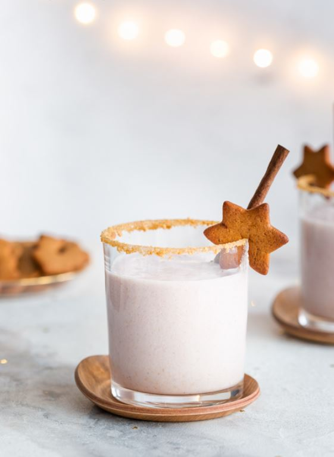

JÕULUHÕNGULINE JÄÄTISEKOKTEIL

Koostisosad
Kogus
Koostisosad
0,5 l
vanillijäätist
300 ml
glögi (alkoholivaba)
5 tk
õhukest piparkooki
oma maitse järgi
piparkoogipuru
Valmistamine
Pane kõik koostisained kannmikserisse ja surista ühtlaseks kokteiliks.
Serveeri pruuni suhkru või piparkoogipuruga kaunistatud klaasidest.